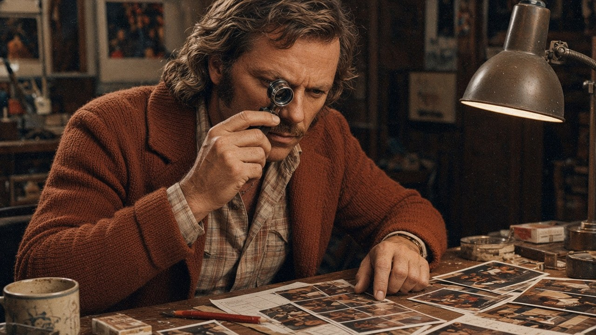
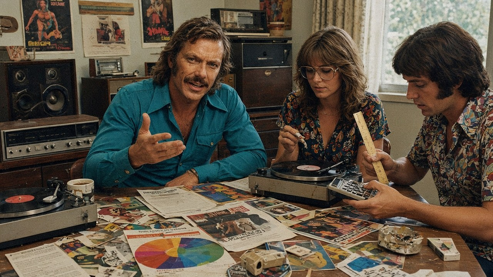

Behind the scenes · The studio
We Spent a Week Inside Ace Is Back!
Lights, ink, a plastic megaphone, and then morning television. The Ad Man — genius and creative director of the whole operation — let us through the door.

We spent a week inside the Ace Is Back! studio, a loft that smells of developer, rubber cement and pretzels, and is run — we were told this more than once — by a genius. He does not use another name. He is the Ad Man, creative director, head of vinyl, unofficial art director, and the man who will move a plant two inches and call it a philosophy.
The comics are drawn here. The Vinyl desk interviews are staged here. The vintage hi-fi ads are spread on a table here until someone is allowed to go to lunch. We were given a folding chair, a bad cup of coffee, and permission to watch, which is how the Ad Man prefers to be loved: from a slight distance, with the lights on.
The vinyl desk, under lights
Monday was a photoshoot for the vinyl stories. Crates of records, a cheap glossy yellow megaphone, Skip Calloway in the surplus jacket and the red bandana, and enough tungsten to warm a small town. Photographer Ruthie Kowalski worked the floor. The Ad Man worked the air.
“If the megaphone isn’t plastic,” he told us, “nobody will believe the scandal. I am a stickler for authenticity, including the inauthentic parts.” Skip nodded as if this were already in the script. Ruthie kept shooting. “He wanted the signs in, then out, then in again,” she said later. “I just changed rolls.”

Colour, ashtrays, no likenesses
The illustrators sit at sloping boards under a weather system of desk lamps. There are brushes in jars, overflowing ashtrays, a radio that knows only one station, and colour pages pinned to the wall: a smoking guitar, a gull-wing car, a staircase in a bolt of lightning. No makeup, no famous faces. “The masked rocker is a stand-in,” says Ellis Brennan, who has ink under his nails and a union opinion about lunch. “The Ad Man stands behind you and hums ‘New York Groove’ until the panel starts to work. It’s either inspiring or a workplace issue. We haven’t voted.”
Sid Rosario, who is faster and slightly meaner with a crow-quill, did not look up. “If you can tell who it is,” he said, “you’ve already gone too far.”
“I can see the grain from here. That’s the point.”

On Thursday he sat with the contact sheets and a jeweller’s loupe, marking frames with a red pencil as if the century depended on which laugh was the right laugh. “I can see the grain from here,” he said, without looking up. “That’s the point.” A mug went cold at his elbow. The ashtray did not.

The ads, and the argument
The collection of vintage hi-fi advertisements lives, between appearances on the site, in a pile on a table that also holds two turntables, a colour wheel, and an ashtray that has seen things. Connie Voss, picture editor, held a pica ruler like a gavel. “The ads are the easy part,” she said. “The hard part is stopping him from writing a headline over the printed headline.”
The Ad Man, in a teal shirt that had opinions of its own, gestured at a receiver in a photograph and then at the room, as if both might still be improved. “Wood veneer,” he said, “is a promise. I don’t care how many times I have to say it.”
The pair, under lights
Earlier in the week they had actually shot one of those pages: the magazine ad in the collection in which a woman sits between a pair of walnut speakers, silver components and a turntable stacked on the cabinets, shag carpet to the curtain — the one headed Nice Pair. The Ad Man had changed his jacket. He had not changed his views on wood veneer.


Advertisement · fake

By Friday the loft had loosened. Somebody put a record on. Somebody else found doughnuts. The Ad Man sat on a stool in a cream shirt and laughed as if the week had been someone else’s idea and he was only now enjoying it. Ruthie took one more frame, “for the wall, not the site,” and then put the camera down, which is how you know a shoot is actually over.
And then he went on television
The genius behind the site was also booked, because of course he was, as a guest on a perfectly ordinary morning show: Rise & Shine with Chuck Daley. Orange couch, houseplant, coffee, a doughnut that did not get eaten on air. Chuck wore a tie you could see from a passing car. The Ad Man wore a sharper one, and brought an LP whose sleeve, he was careful to say, “is not the point. The point is the atmosphere.”


We took a transcript from the tape, minus the weather, a recipe for meatloaf, and a jingle we did not have the rights to remember.
Chuck Daley. Welcome back, we’re live, I think, and my guest is the man behind Ace Is Back! — the Ad Man himself. You brought a record.
The Ad Man. I brought an atmosphere. The record is merely the delivery system.
Chuck Daley. Why Ace?
The Ad Man. Because the stories were already too good, and somebody had to put them in order. I am, if I may, the genius in the room. I say that only because you asked me onto this couch and told me to be interesting before the weather.
Chuck Daley. And why vinyl? We have a desk for it, I’m told. A whole desk.
The Ad Man. Because it is heavy, it is slightly ridiculous, and it still sounds like a better evening. We have crates. We have feelings. We have advertisements that believe in wood veneer, and I believe in them right back.
Chuck Daley. There was a megaphone involved. People have written in.
The Ad Man. Plastic. Unfortunately. Skip was very committed. The photographer was very patient. The globe, as far as I can tell, is still here. If you’re going to declare war on vinyl, you should at least notice what the megaphone is made of. We did, eventually.
Chuck Daley. Record Store Day is coming. Advice for the folks at home, besides watching us?
The Ad Man. Doors open at eight. Bring your elbows. If you can’t find a shop, you are not looking hard enough. And if a man in a mustard jacket holds the door, that is marketing, not a miracle.
Chuck thanked him, held up the mug, and threw to a map with a smiling sun. In the hallway afterward the Ad Man straightened his tie, which had not been crooked, and said, “That’s the show. Now: back to the grain.” We let him go. The doughnut, as noted, did not survive.
Fine print: The Ad Man is an invented on-page character and is not named as a real person. Ruthie Kowalski, Ellis Brennan, Sid Rosario, Connie Voss, Debbie Fane and Chuck Daley are invented too; so is Rise & Shine with Chuck Daley. This studio visit is a period-style feature in the spirit of the site. We show no likeness of Ace Frehley or other members of KISS; the comic pages in these photographs are colour panels from the Ace stories on this site; the masked rocker remains a stand-in, not a likeness of a real person. The Vinyl desk interviews and the vintage hi-fi ads are as you find them elsewhere on the site. The ads are fake. The records are real. The megaphone was, in fact, plastic.
← Back to the true tales